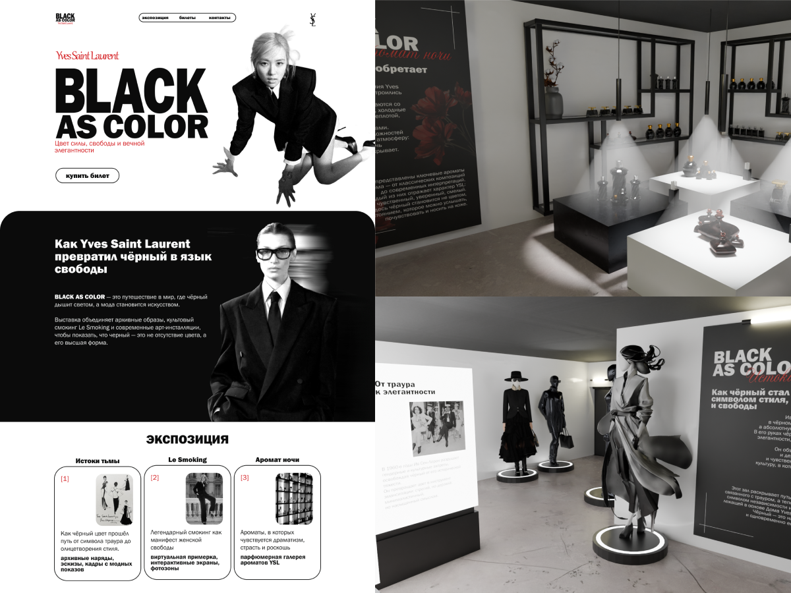

01
Graphic Design · Branding · Web Design · 3D
Логотип, постеры, лендинг и 3D-визуализация выставки.
Учебная концепция интерактивной выставки. Концепция основывается на раскрытии того, как чёрный цвет используется в разных направлениях деятельности YSL и как его смысловая нагрузка менялась со временем. В основе проекта лежат ключевые работы бренда, начиная с легендарного костюма Le Smoking 1966 года, который стал знаковым моментом в истории моды.
*Это не официальный проект бренда и не коммерческий заказ Yves Saint Laurent.